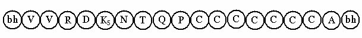
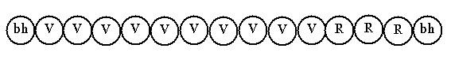

Bài 6 LỘ NHÃN MÔN CẢNH LỚN I- ĐỊNH NGHĨA. Gọi là cảnh lớn, vì 1 trong ba yếu tố trợ sanh lộ nhãn môn yếu kém, cảnh không đủ lực kích tác vào dòng hữu phần ngay, phải trải qua 2 hoặc 3 sát-na HPVQ, khi ấy cảnh sắc mới làm luồng hữu phần dao động được. II- PHÂN TÍCH. Lộ nhãn môn cảnh lớn diễn tiến theo hai 2 mô thức: chót đổng lực và chót hữu phần Khách. Mỗi mô thức có hai tâm lộ: tâm lộ có 2 HPVQ và tâm lộ có 3 HPVQ. Như vậy có cả thảy là 4 tâm lộ. Sở dĩ trong cảnh lớn không có Na cảnh là vì: - Khi sát-na đổng lực thứ 7 diệt đi, cảnh sắc chỉ còn 1 sát-na tuổi thọ hoặc vừa diệt, không đủ thời gian 2 sát-na cho tâm Na cảnh sinh khởi. - Đổng lực tuy có sức mạnh, nhưng bấy giờ cảnh sắc đã muội lược (vì chỉ còn 1 sát-na tuổi thọ) nên không đủ sức ngăn cản cảnh Chủ khởi lên, ví như cây đã lão hóa dù có bón phân cũng chẳng tác dụng mạnh. 1- Biểu đồ. a- Chót Đổng lực Lộ nhãn môn cảnh lớn chót đổng lực có 2 sát-na HPVQ diễn tiến như sau:
Tâm Lộ này có được: - Sát-na:12 sát-na tâm khách. Lộ tâm có 3 HPVQ cũng tương tự, chỉ khác là thêm một sát-na HPVQ. Nên ghi nhận: Đối với những lộ tâm chót đổng lực, dù rằng đó là cảnh rất lớn hay Lớn, khi tính ở trong 26 cõi ngũ uẩn là tính chung, nếu phân tích chi tiết thì: - Đối với nhãn thức và nhĩ thức thì có trong 26 cõi ngũ uẩn. b- Chót hữu phần Khách. Lộ nhãn môn cảnh lớn chót hữu phần Khách.  Đây là biểu đồ tâm lộ có hai HPVQ. Lộ tâm này có: - Sát-na: 12 sát-na tâm khách. Tâm lộ chót hữu phần Khách có 3 sát-na HPVQ cũng tương tự, chỉ thêm 1 sát-na HPVQ mà thôi. 2- Lý giải. Tâm lộ ngũ môn cảnh lớn đôi khi cũng khởi lên 4 sát-na HPVQ là do cảnh yếu, trong trường hợp này đổng lực chỉ sanh khởi 6 sát-na, dứt sát-na đổng lực thứ sáu thì cảnh diệt đi. Như thế, dù trải qua 4 HPVQ tâm lộ vẫn đủ túc số là 17 sát-na, vẫn không choán mất thời gian trong tâm lộ vậy. LỘ NHÃN MÔN CẢNH NHỎ Khi nhân trợ sanh tâm lộ nhãn môn yếu kém (nhất là nhãn vật và cảnh sắc). Cảnh sắc chiếu vào dòng hữu phần, phải trải qua từ 4 đến 9 sát-na HPVQ mới làm dao động được dòng hữu phần để khởi sanh tâm Khách. Do yếu kém nên đến chặng Đoán định (voṭṭhapanathāna) cảnh sắc trở nên muội lược, vì thế tâm Đoán định không thể "xác định" rõ. Một hình ảnh rõ ràng sắc nét thoáng qua cũng dễ nhận định hơn là một hình ảnh mờ mờ ảo ảo, thế là đổng lực không có điều kiện sanh khởi để ứng xử với cảnh sắc. Mặt khác, nếu cảnh sắc trải qua 9 sát-na HPVQ sẽ không còn thời gian cho đổng lực sanh lên. Và trong trường hợp cảnh yếu kém, muội lược như thế, tâm lộ chỉ hiện khởi lên 2 hay 3 chập Đoán định (voṭṭhapana) rồi trở về hữu phần cơ bản. Lộ nhãn môn cảnh nhỏ có tất cả là 6 lộ, được tính theo sát-na HPVQ. Tâm lộ thứ nhất có 4 sát-na HPVQ ... Tâm lộ thứ 6 có 9 sát-na HPVQ. Biểu đồ. Tâm lộ nhãn môn cảnh nhỏ diễn hoạt như sau:
Lộ này có được 5 chặng tâm khách. - Có 9 thứ tâm khách (2 tâm Hướng môn, 2 nhãn thức, 2 Tiếp thâu và 3 Quan sát), - Sanh khởi nơi 8 hạng người trong 26 cõi năm uẩn. Năm lộ kế tương tự chỉ khác mỗi lộ có thêm một sát-na HPVQ. GHI CHÚ. Sở dĩ có tâm Quan sát hỷ thọ, vì đấy là cảnh cực tốt. Theo sự vận hành của tâm pháp thì tâm Quan sát hỷ thọ sanh lên nhận cảnh cực tốt dù cảnh ấy là rất lớn, lớn hoặc nhỏ, ví như ngọc là vật quý, dù lớn hay nhỏ cũng là ngọc. Nhãn thức, nhĩ thức thì có trong 26 cõi năm uẩn, nếu là tỷ thức, thiệt thức và thân thức thì chỉ có trong 11 cõi Dục giới. LỘ NHÃN MÔN CẢNH RẤT NHỎ. Khi bốn yếu tố trợ sanh cho tâm lộ trong tình trạng muội lược, cảnh lực chỉ đủ sức làm dao động dòng hữu phần, nhưng không thể cắt đứt cảnh Chủ làm khởi sanh tâm khách, nên cảnh này được gọi là cảnh rất nhỏ (atiparittārammaṇa). Vì không làm khởi sanh tâm Khách, nên những tâm lộ cảnh rất nhỏ được gọi là ngoại lộ (vimuttivīthi). Tùy theo cường độ cảnh lực, tâm lộ cảnh rất nhỏ có từ 10 đến 16 HPVQ, hữu phần Rúng động khởi lên một hai chập rồi trở về hữu phần cơ bản. Tính theo sát-na HPVQ, tâm lộ cảnh rất nhỏ có được 7 lộ, lộ thứ nhất có 10 HPVQ ... lộ thứ 7 có 16 HPVQ. Biểu đồ. Lộ thứ nhất có 10 HPVQ.  Lộ này sinh khởi ở 8 hạng người trong 26 cõi ngũ uẩn, không chặng cũng không có tâm khách. Sáu lộ sau cũng tương tự, chỉ thêm dần mỗi lộ một sát-na HPVQ. TỔNG KẾT Lộ tâm ngũ môn thời bình nhật đã được trình bày qua lộ tiêu biểu là nhãn môn. Điều cần ghi nhớ là: - Lộ cảnh rất lớn chỉ có một sát-na HPVQ. Tổng cộng có 100 lộ ngũ môn thời bình nhật đã được trình bày. -ooOoo- Ðầu trang | Mục lục | 01 | 02 | 03 | 04 | 05 | 06 | 07 | 08 | 09 | 10 | 11 | 12 | 13 | 14 | 15 | 16 | 17 | 18 | 19 | 20 | 21 | 22 | 23 | 24 | 25 |